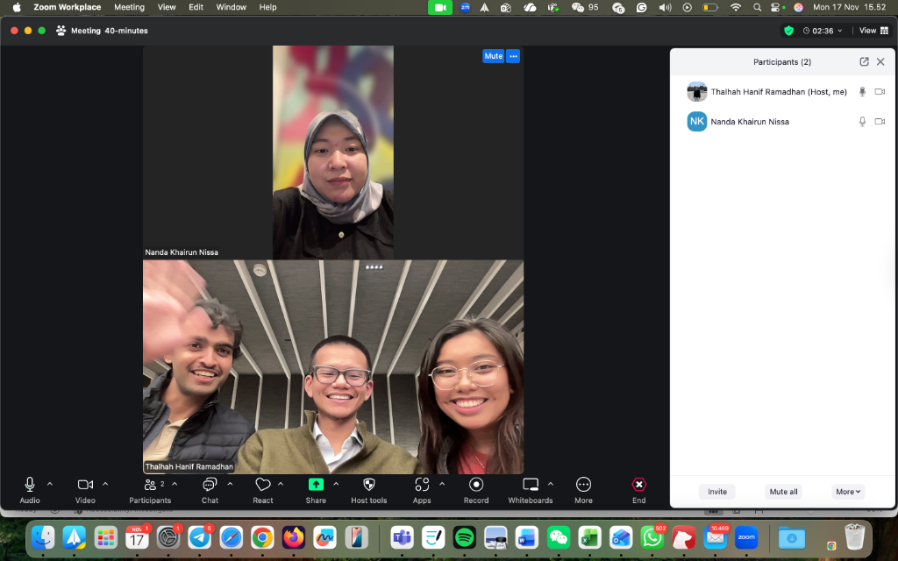
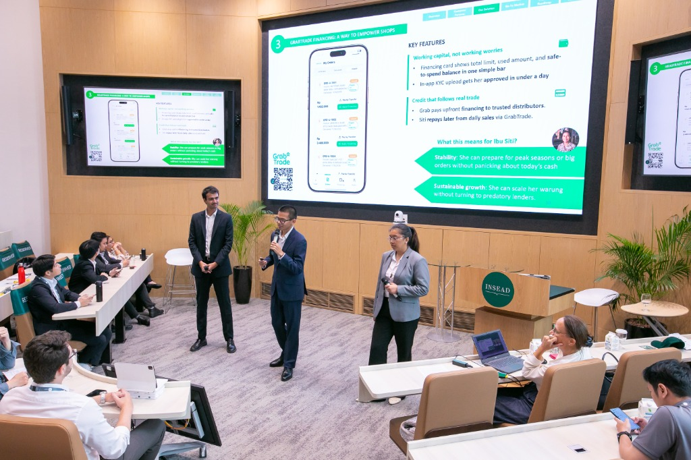
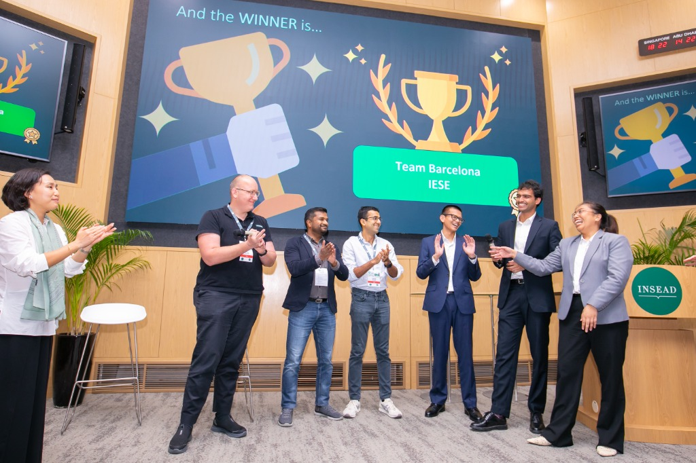

Building GrabTrade at 35,000 Feet
How Team Barcelona from IESE beat 85 global MBA competitors to design a B2B marketplace that could digitize Southeast Asia's $195B general trade market — the first IESE team ever to win in the competition's 9-year history.
Key figures
The Competition: INSEAD Product Games 9.0
The INSEAD Product Games is one of the world's most prestigious MBA product management competitions. Organized by INSEAD's TMT Club, it brings together top global business schools to compete on a single product brief — judged by real product leaders from Google, Stripe, and Grab.1
The Brief
"Reimagine Essential Access: Build the Next Vertical with Grab."
Teams had to design a sustainable, scalable, and user-centric new product vertical leveraging Grab's multi-sided ecosystem — covering drivers, merchants, logistics, and payments — to bridge a significant access gap for millions in Southeast Asia.
Submissions were judged on Product Concept & Design, Business Acumen, Product Display (Live Demo), Ecosystem Fit, and Frequency of Use. The prize: $10,000 USD cash and fast-tracked final interviews.
The Market: A $195 Billion Problem
Indonesia and the Philippines are home to nearly 5 million micro-retailers — warungs and sari-sari stores — that form the backbone of everyday commerce in Southeast Asia. Despite generating enormous economic value, they remain trapped in an inefficient, cash-heavy, and manually-operated supply chain.
- 3.5M Warungs operating in Indonesia ($155B total sales)
- 1.3M Sari-sari stores in the Philippines ($40B total sales)
The root cause isn't ambition — it's infrastructure. These store owners lack access to transparent pricing, reliable delivery, digital payments, and working capital. The supply chain is fragmented, causing stockouts, predatory credit (up to 240% APR), price opacity, and total digital exclusion.
The Journey: From Barcelona to Singapore
We only found out about the competition two weeks before the deadline and didn't agree on our final concept until four days before submission. Here is how a team of three IESE MBA students — none of them developers — got it done.
- Week 1 (Barcelona): Formed the team through a shared curiosity for tech. Felt imposter syndrome due to lack of engineering backgrounds, but pushed through.
- Week 2 (Ideation): Narrowed dozens of ideas to GrabTrade. Grab already had logistics, payments, and trust. They just needed the B2B marketplace layer connecting distributors directly to micro-retailers.
- Week 3 (Field Research): Conducted 11 in-depth interviews with warung/sari-sari owners and regional distributors. Realized the gap wasn't technology; it was last-mile distribution infrastructure.

Fig 1. — Conducting user interviews with industry stakeholders across a 7-hour timezone difference.- Finals Prep (20-Hour Flight): Selected as a top 4 global finalist. Flew from Barcelona to Singapore, turning an empty Qatar Airways cabin into a makeshift office to refine financials and stress-test assumptions with our Grab mentor.
- The Finale (Singapore): "Vibe coded" a working prototype using AI (Claude and Loveable) to demo the full user flow live. The judges called our MVP "functionally complete." We won the Grand Prize.

Fig 2. — Pitching the GrabTrade live MVP to judges from Google, Stripe, and Grab.The Solution: GrabTrade
GrabTrade is a B2B marketplace and financing solution that digitizes the connection between regional distributors and micro-retailers, built on Grab's existing infrastructure.
01. Live B2B Marketplace Store owners browse and order from multiple distributors 24/7. A live price board shows real-time wholesale prices and promotions, giving warungs the transparency of a supermarket buyer.
02. Grab-Powered Delivery Orders are pooled and auto-routed across Grab's existing fleet. Smart order pooling reduces delivery fees for store owners and increases earnings-per-km for Grab drivers.
03. GrabTrade Financing Digital transaction history enables responsible credit scoring. Store owners access formal working capital at 18% APR (vs. 240% informal lenders). Grab pays distributors upfront; store owners repay from daily sales.
Financial Projection
Modeled against Grab's 2024 income statement structure: starting investment of ~$3.3M with a clear path to profitability by Year 3 driven by commission, logistics fees, and GrabPay fintech revenue.
| Metric | Year 1 | Year 2 | Year 3 |
|---|---|---|---|
| Gross Revenue | $3.0M | $5.6M | $10.4M |
| Operating Expenses | $4.4M | $5.8M | $7.4M |
| EBITDA | –$1.4M | –$0.2M | +$3.0M |
| Shops Onboarded | 198,000 | 727,000 | 1,470,000 |
Personal Learnings
Standing in front of product leaders from Grab, Google, Stripe, and INSEAD is an incredible pressure test. But more than the pitch itself, the true value came from the process of getting there—especially as three non-technical MBA students discovering what it means to build in the age of AI.

Fig 3. — Winning the Grand Prize at the INSEAD campus in Singapore.- Managing Multiple POVs: Our team was composed of individuals from fundamentally different backgrounds: my manufacturing and industrial tech experience, Monica's deep FMCG channel knowledge, and Uday's cross-border finance expertise. Naturally, we all had strong—and often conflicting—ideas about what product to build. Merging those perspectives into a single cohesive narrative was the hardest part, but it forced us to find the most robust idea that survived the collective scrutiny of our three specialized lenses.
- Grappling with "No-Code": I got introduced to Lovable by a second-year MBA student, Miguel, and dove headfirst into trying to "vibe-code" our MVP without an engineering background. The reality? I wasn't very efficient at first. I burned through more credits than I would like to admit trying to wrestle the AI into producing exactly what I wanted. But despite the friction, the experience shone a light on how these tools are fundamentally life-changing and are disrupting the world of product development. The barrier to entry has evaporated. I've continued to use these tools since, and there's absolutely more to come.
- Thinking as a True Product Manager: To build GrabTrade, we couldn't just design a pretty interface for the micro-retailer; we had to map out the entire ecosystem. This meant identifying multiple layers of stakeholders—how the product benefits the regional distributors, how it impacts Grab's internal divisions (Logistics vs. Fintech vs. Core Delivery), and how it aligns with Grab's long-term company trajectory in SEA. When you solve a problem at the community level, a powerful winning loop emerges that benefits the entire corporate apparatus.
- Talk Less, Listen More: To truly understand customer problems, you must be hyper-local. Put yourself in the shoes of the people facing the problem every day. Our 11 in-person interviews were worth more than 100 hours of desk research.
- Taste, Judgment, and Speed of Learning: We were an MBA team with no developers. Two years ago, that would have been a death sentence in a product building competition. Today, by leveraging AI tools like Claude and Lovable to "vibe-code" our MVP, we realized that technical execution is becoming a commodity. What matters now is your taste in design, your judgment on what features actually solve the problem, and your sheer speed of iteration.
- Don't Reinvent the Wheel: Innovation isn't always about creating a net-new paradigm. Often, it's about tailoring existing rails and resources (like Grab's delivery and fintech ecosystem) to the very real, unsexy needs of users.
- Solve for the Community: Always look after those behind the users—the families, the community, the local economy. When they thrive, a powerful winning loop emerges. This was Grab's long-term vision in action.
"We started this journey with imposter syndrome, worrying that our lack of technical backgrounds would hold us back against engineering-heavy teams. But we quickly learned that the diversity of thought in an IESE cohort is a superpower."
— Team Barcelona, IESE MBA Blog2
The Team
Three IESE MBA Class of 2027 students. Three continents. Zero developers. A medically concerning amount of coffee.
Hanif Ramadhan Founder of Asperio (Industry 4.0, SEA) with 7 years of industrial tech experience. Directed product strategy and the development of the functional MVP.
Monica Beatrice Southeast Asian FMCG professional with deep knowledge of local distribution channels. Spearheaded core ideation, financial structuring, and market strategy.
Uday Mohan Govil Digital & Customer Strategy and Innovation & Ventures professional. Former management consultant who led the pitch presentation structure, ideal customer profiling, and target market sizing.
[1] INSEAD TMT Club. The INSEAD Product Games. https://blogs.insead.edu/productgames/
[2] IESE MBA Blog. Our Journey to Winning the INSEAD Product Games 2025. https://blog.iese.edu/mba/our-journey-to-winning-the-insead-product-games-2025/